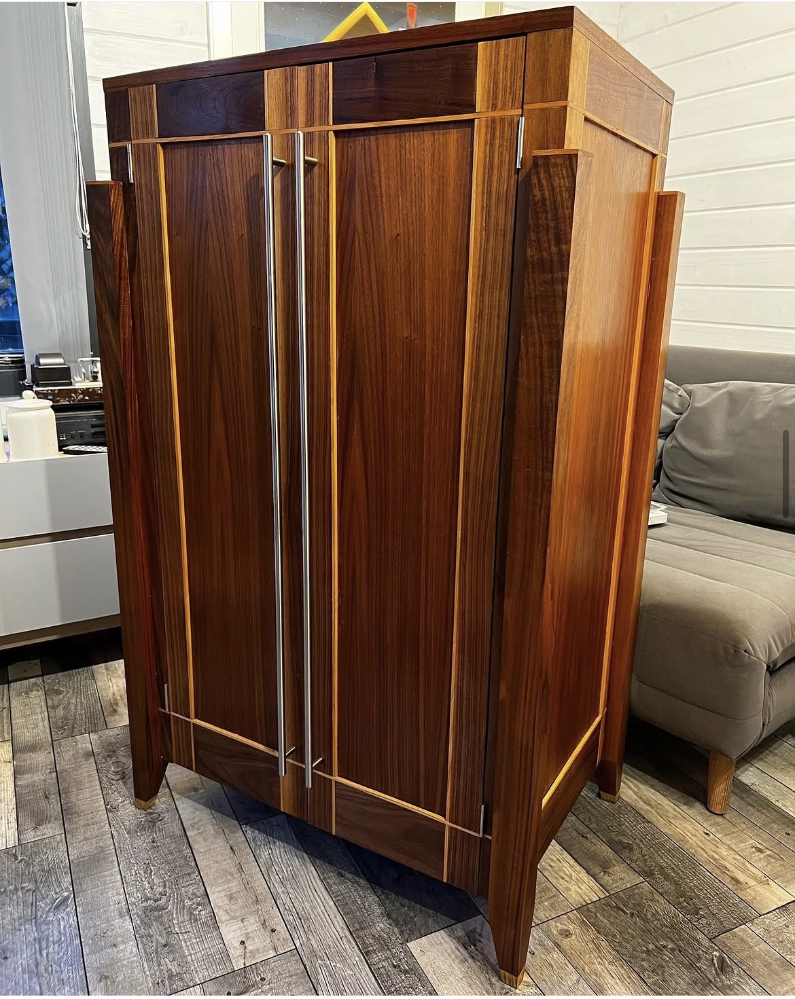
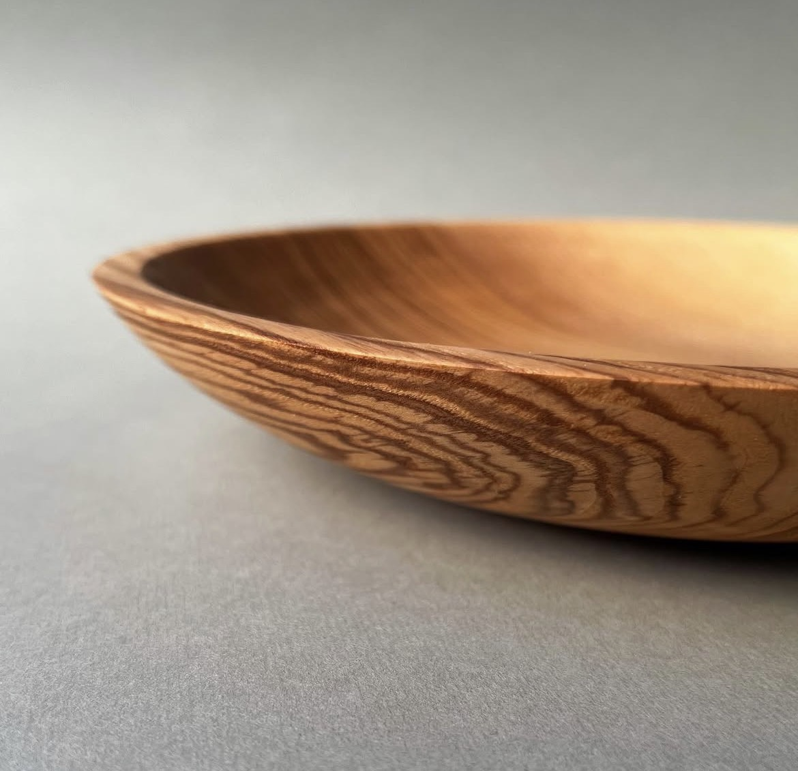
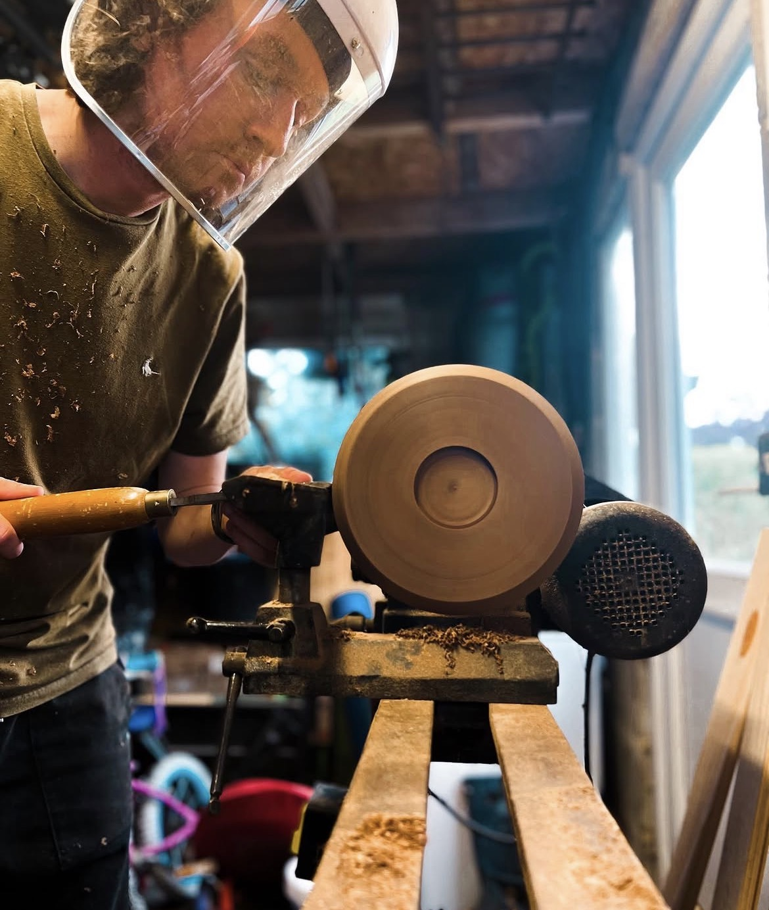

Freestanding furniture
Individual furniture pieces, shaped by the timber, proportion and practical use.
Thoughtfully designed, carefully made furniture and wooden objects, created with an appreciation for natural materials, detail and lasting quality.
Explore my workI make individual pieces of furniture and smaller wooden objects, bringing together traditional woodworking skills, considered design and the character of the timber itself.
A selection of bespoke furniture and smaller pieces made in the workshop.

Individual furniture pieces, shaped by the timber, proportion and practical use.

Handmade pieces that celebrate the grain, warmth and texture of natural wood.
Good craftsmanship takes time. From shaping and turning timber to refining the details, each stage is an opportunity to bring out the material's natural character.

Get in touch to discuss a bespoke furniture commission or a piece you'd like made.
Based in Poole, Dorset.
Please add your preferred contact email or telephone number here before publishing.